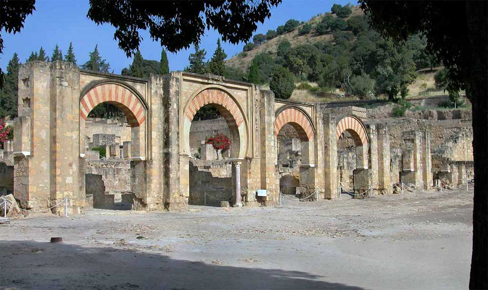

Medina Azahara: "La ciudad brillante"

Medina Azahara, castellanización del nombre en árabe, مدينة الزهراء Madīnat al-Zahrā' ("la ciudad brillante"), fue una ciudad palatina o áulica que mandó edificar Abderramán III (Abd al-Rahman III, al-Nasir) a unos 8 km en las afueras de Córdoba en dirección oeste, más concretamente, en Sierra Morena.
Los principales motivos de su construcción son de índole político-ideológica: la dignidad de califa exige la fundación de una nueva ciudad, símbolo de su poder, a imitación de otros califatos orientales y sobre todo, para mostrar su superioridad sobre sus grandes enemigos, los fatimíes de Ifriqiya, la zona norte del continente africano. Además de oponentes políticos, lo eran también en lo religioso, ya que los fatimíes, chiíes, eran enemigos de los omeyas, mayoritariamente de la rama islámica suní.
La cultura popular también dice que fue edificada como homenaje a la mujer favorita del califa: Azahara.
El yacimiento arqueológico de Medina Azahara está declarado Bien de interés cultural en la categoría de monumento desde el año 1923. El 27 de enero de 2015 «Madínat al-Zahra» fue inscrito en la Lista Indicativa de España del Patrimonio de la Humanidad, en la categoría de bien cultural (nº. ref 5978).
El 12 de enero de 2017 se registró el documento definitivo de la candidatura de la ciudad para formar parte de la Lista de Patrimonio de la Humanidad, siendo declarada oficialmente como Patrimonio de la Humanidad el 1 de julio de 2018. En 2016 recibió 181.653 visitantes, siendo el cuarto espacio cultural más visitado de la ciudad de Córdoba.
Fundación de la ciudad
Medina al-Zahara fue mandada construir por el primer califa de Al-Ándalus, Abd al-Rahman al-Násir (891–961) —o Abderramán III— como parte del programa político, económico e ideológico puesto en marcha tras la instauración del califato. Se dice que su fundación está relacionada con una favorita del califa que tendría por nombre al-Zahrá (Azahara) pero los principales motivos de su construcción son más bien de índole política-ideológica: la dignidad de califa exige la fundación de una nueva ciudad símbolo de su poder a imitación de otros califatos orientales y además para mostrar su superioridad sobre sus grandes enemigos, los fatimíes de Ifriqiyya, la zona norte del continente africano.
Respecto al origen del nombre podría provenir, como se ha dicho anteriormente, del nombre de su esposa más querida Azahara, el cual significa "La Flor" quien le sugirió construir una hermosa ciudad extramuros de Córdoba, una ciudad que llevaría el nombre de la amada y se convertiría en la "Ciudad de al-Zahrá", la "Ciudad de la Flor de Azahar". Pero esto es más leyenda que realidad ya que al-Zahrá también significa “La Brillante”, palabra que está emparentada a otras que, en esa lengua, significan “Venus” o la misma “flor”, por lo que simplemente puede hacer referencia a la propia nueva y brillante ciudad del califa.
Aunque el origen de la ciudad no carece de elementos legendarios, se sabe que la construcción comenzó a finales del 936 de la era cristiana, estando las obras a cargo del maestro alarife Maslama ben Abdallah, y se continuó durante los cuarenta siguientes, alcanzando los tiempos de su hijo y sucesor en el califato, al-Hákam II. En el 945 se produce el traslado de la corte a esta ciudad, que en esos momentos cuenta con la Mezquita Aljama (941), aunque la Ceca o Casa de la Moneda no se traslada hasta 947-948. Al erigir esta majestuosa ciudad el califa cordobés pretendiera anular, y aun superar, a los califas orientales abasíes, y especialmente la famosa ciudad y corte de Samarra.
Los textos literarios e históricos se hacen eco de las cuantiosísimas sumas dedicadas a su construcción, de los enormes trabajos realizados al efecto, de su monumentalidad y esplendor artístico —hasta en el menor detalle— y del lujo y la ostentación que el califa desplegaba en las recepciones y ceremonias que allá se celebraban con frecuencia, pues de hecho la administración y la corte se trasladaron a la nueva sede. Entre otros, en sus ricos salones serían recibidos reyes cristianos hispánicos desposeídos de su trono, embajadores del emperador de Germania, emisarios de Borrell II de Barcelona… Torres Balbás (uno de los padres de la restauración monumental en España) se refiere así a estas ceremonias: “Tras subir entre apretadas filas de soldados ricamente uniformados, provistos de brillantes armas y en perfecta formación, llegaban monarcas y embajadores al salón oriental de Madinat al-Zahara, abierto a una terraza, cuyos muros cubrían ricas alfombras. Al fondo, sentado sobre almohadones y rodeado de todos los dignatarios de su brillante corte, aparecía el califa. Semejante a una divinidad casi inaccesible. Ante él se postraban en tierra, y el soberano, con insigne fervor, les daba a besar su mano”.